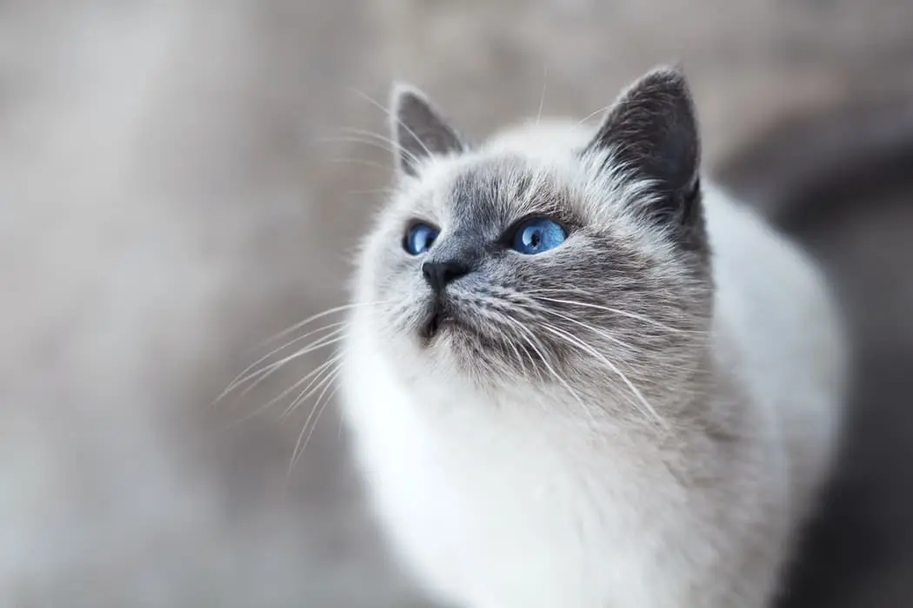
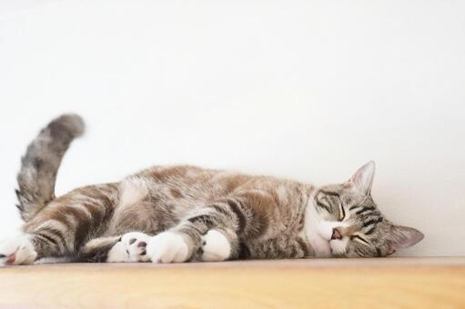
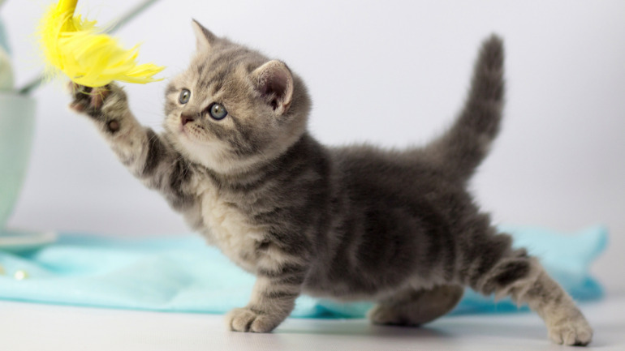
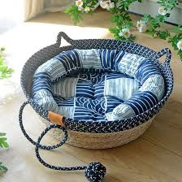

猫ってどんな生き物？
猫は人と共に暮らしてきた動物ですが、自分の意思やペースをとても大切にする生き物です。 また、猫は好奇心旺盛で観察力が高く、環境の変化や人の行動にも敏感に反応します。 それぞれの性格や気質が異なり、同じ猫でも性格によって行動パターンや好む遊びが違います。 飼い主との信頼関係が築かれるまでには時間がかかりますが、そのぶん深い愛情表現を見せてくれるのも特徴です。 自分の安全や快適さを優先するため、ストレスを感じる環境では距離を置くこともあります。 猫を理解するには、観察し、気持ちを尊重することが大切です。
猫の基礎的な特徴
性格

警戒心が強い
猫は身を守る本能が強く、初めての人や場所ではすぐに近づきません。 安全だと判断するまで、じっくり様子を観察する習性があります。 このため急に触ったり大声を出すと驚くことがあるので、静かに接することが重要です。
信頼すると甘える
時間をかけて安心できる相手だと認識すると、体をすり寄せたり、喉を鳴らしたりして愛情を表現します。 些細な日常のケアや遊びを通じて、猫との絆はより深まります。
自分のペースを守る
猫は気分を大切にするため、構われすぎると距離を取ることがあります。 無理をせず、猫のタイミングに合わせることで、安心感と信頼感を維持できます。
生活リズム

長時間の睡眠
猫は1日の多くを眠って過ごし、体力を温存しています。猫の睡眠時間は1 日12〜16時間程度です。特に子猫は成長ホルモンの分泌が盛んなため、18時間以上眠ることが一般的です。 これは野生時代の狩りに備える習性の名残で、睡眠の質が健康状態に直結します。 安心して眠れる環境を整えることが大切です。
活動的な時間帯
明け方や夕方は特に活発になり、遊びたがることが多いです。 この時間帯に運動や遊びを取り入れることで、健康維持とストレス解消につながります。
静かな環境を好む
大きな音や急な動きは猫にとってストレスになります。 落ち着いた環境を作ることは猫の心身の安定に重要で、隠れ場所や寝床の確保も有効です。
人との関係
距離感を大切にする
猫は自分から近づくことで安心感を得ます。 無理に触らず、そっと見守る姿勢が信頼を深めます。 日々の観察で猫のサインを理解することが大切です。
嫌なときは無理をしない
耳やしっぽの動きは猫の気持ちを表しています。 嫌がっているサインが出たら、すぐに距離を取りましょう。 尊重されることで猫は安心し、より愛情を示すようになります。
遊びと運動

狩りの本能を満たす
猫じゃらしなどで追いかける動きを再現すると、本能が刺激され満足感を得やすくなります。 遊びを通じて運動不足を解消し、ストレス軽減にもつながります。
短時間でも毎日行う
長時間でなくても、毎日遊ぶことが大切です。 遊びのリズムを作ることで、猫の精神的な安定と健康維持に役立ちます。
遊びの終わりを意識する
最後に獲物を捕まえさせることで達成感が生まれます。 満足して落ち着きやすくなり、夜間の活動過多を防ぐこともできます。
猫の健康と生活習慣
猫の健康を保つには、日々の生活習慣の管理が欠かせません。 食事の質や量、適度な運動、定期的な健康チェックが重要です。 また、ストレスや環境の変化にも敏感なので、静かで安心できる空間を提供することも大切です。 猫のサインを見逃さず、体調や行動の変化を早めに察知することで、病気の予防にもつながります。
健康管理
食事のポイント
栄養バランスの良い食事を与えることは、猫の健康維持に直結します。 年齢や体調に合わせた食事量を管理し、急な変更は避けるようにしましょう。
定期的な健康チェック
ワクチン接種や定期的な健康診断は、病気の早期発見につながります。 体重や毛並み、排泄の状態を日常的に観察することも大切です。
運動とストレス管理
適度な遊びや運動でストレスを発散させ、筋力維持や肥満予防に役立ちます。 静かで安心できる休息場所を用意することも心身の健康につながります。
生活環境の整え方

安心できる居場所を作る
猫は自分だけの落ち着ける場所があることで、強い不安や緊張を感じにくくなります。 静かで人目の少ない場所に、寝床や隠れられるスペースを用意してあげましょう。
上下運動できる環境
キャットタワーや棚などの高低差は、猫の運動不足解消に効果的です。 高い場所から周囲を見渡せることで、安心感や満足感も得られます。
清潔な環境を保つ
トイレや食器が汚れていると、猫は強いストレスを感じてしまいます。 毎日の掃除を習慣にし、清潔で快適な環境を維持することが健康につながります。